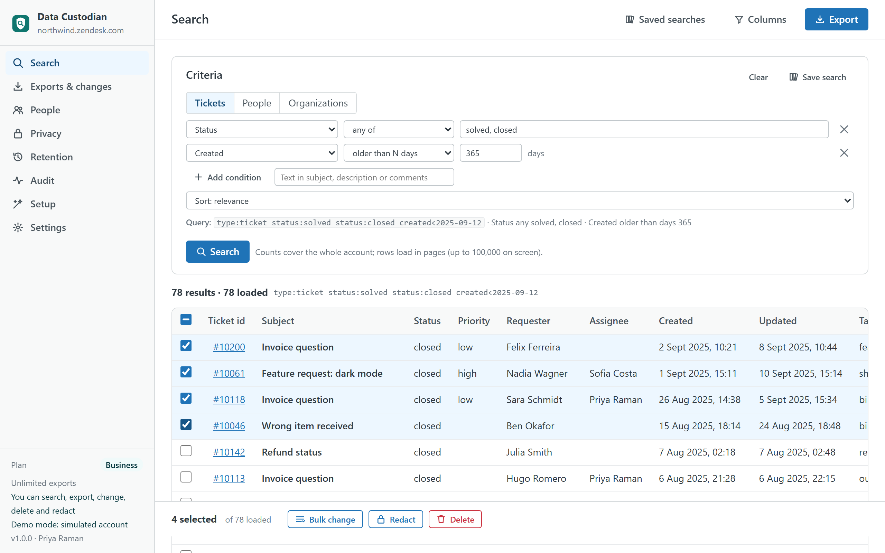
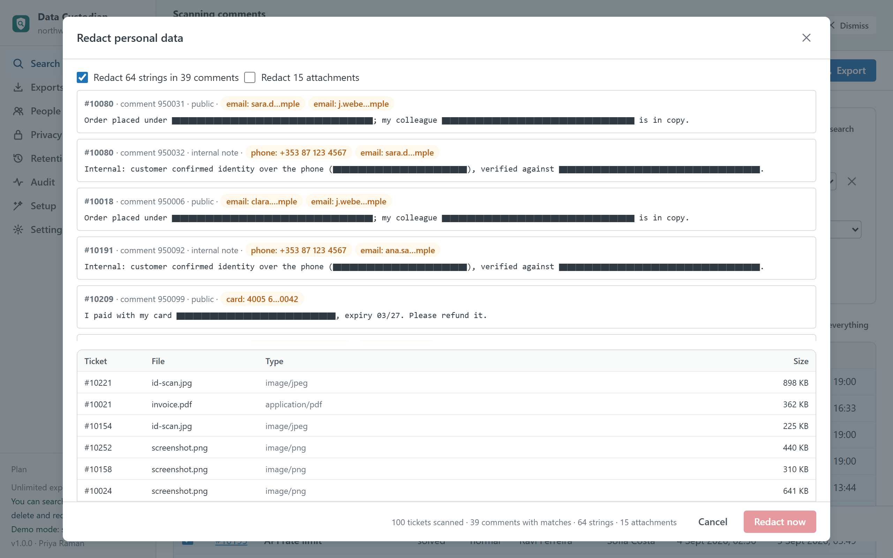
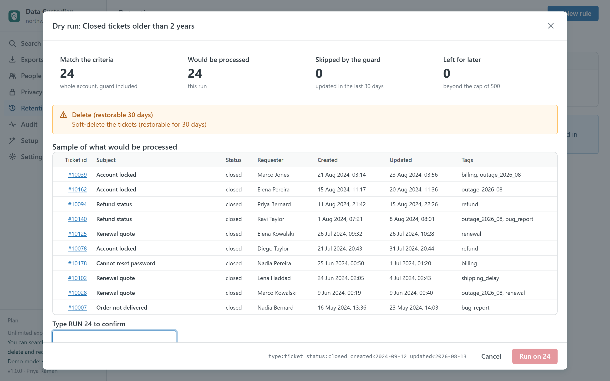

Data Custodian
Your Zendesk data under control, from inside Support and without a server: search the whole account with exact counts, export tickets with their comments to CSV, Excel or JSON, change or delete thousands of tickets in batches with undo, redact personal data with checked patterns, answer a data subject access request with a complete pack, forget a person, and run retention rules after a dry run. Every action leaves evidence of who did what, when, on which tickets.
Built for accounts that need data hygiene and privacy tooling without Zendesk's Advanced Data Privacy and Protection add-on. An independent app from a third-party developer, not affiliated with or endorsed by Zendesk. How it compares with the add-on.

What it does
- Search everything. Tickets, people and organizations by status, dates (absolute or "older than N days"), tags, priority, channel, requester, assignee, group, organization, brand, satisfaction, custom fields and free text. The count is exact for the whole account because the app uses Zendesk's export endpoint, not the search endpoint that stops at 1,000. Rows load in pages, names are resolved, searches can be saved for you or shared with the account.
- Export with the columns you choose. CSV, Excel or JSON; standard fields, custom fields, metrics (first reply and resolution time, replies, reopens), satisfaction. Comments as one row per comment, with or without internal notes. The file is built in your browser and saved by your browser.
- Change in bulk, with undo. Status, priority, type, group, assignee, brand, form, tags, custom fields and an internal note. Review the change, see a sample, type the count above 100 tickets, and the app runs batches of 100 through Zendesk's job endpoints with per-ticket results. Previous values are snapshotted so the change can be reverted from the history.
- Delete, restore, delete permanently. Typed confirmation every time; the deleted tickets list is inside the app for 30 days.
- Redact personal data. Packs for e-mail addresses, phone numbers, payment cards (Luhn-checked), IBANs (mod-97-checked), national ids for Spain, Ireland, the UK, the US, Germany, France, Italy and Portugal, plus your own patterns and exact strings. Every string is shown masked before it is replaced; attachments can be redacted too.
- One person at a time. A DSAR pack as a ZIP: printable report, tickets, comments, attachment links and the raw JSON. A forget sequence for erasure requests: redact their data in every ticket, anonymise the profile, delete the user.
- Retention rules. Criteria plus an action (delete, delete permanently, redact attachments, anonymise) plus guards: skip tickets updated in the last N days, at most N per run. Dry run with counts and a sample, then confirm. Nothing runs unattended.
- Evidence. Every action becomes an event with the actor, the time, the criteria, the counts and the ids. Filter, export as CSV or a printable report; on Business and up the events are also written inside your account as records of a custom object, where every admin can see them.

Guard rails
- Admin-only destruction: deleting, redacting, anonymising and retention runs are for admins on Business and up; they cannot be delegated to agents. Admins decide whether agents may export or run bulk changes.
- Review before write: a sample of what will change, the exact query sent to Zendesk, and typed confirmation ("DELETE 250", "REDACT") for anything irreversible.
- Batches and a ledger: 100 tickets per job, at most two or four jobs in flight, a ledger written before each submit so a closed tab never repeats a batch, pause and stop at any time.
- Rate limits respected: a per-minute budget you control, Zendesk's throttling absorbed rather than surfaced as errors.
- Redaction that does not half-redact: when two packs overlap (a card-looking run of digits inside an IBAN), the longer value wins, so nothing is left partially visible.

Plans
| Free | Pro · $99 | Business · $199 | Enterprise · $349 | |
|---|---|---|---|---|
| Search with exact counts, saved searches | ✓ | ✓ | ✓ | ✓ |
| Rows on screen per search | 2,000 | Unlimited | Unlimited | Unlimited |
| Export rows (CSV, Excel, JSON, with comments) | 500 a month | Unlimited | Unlimited | Unlimited |
| Bulk changes with undo | — | ✓ | ✓ | ✓ |
| DSAR packs, saved searches shared with the account | — | ✓ | ✓ | ✓ |
| Delete, restore, permanent delete | — | — | ✓ | ✓ |
| Redaction packs, attachment redaction, anonymise, forget a person | — | — | ✓ | ✓ |
| Retention rules with dry run | — | — | ✓ | ✓ |
| Evidence | Browser | Browser | Browser + account | Browser + account |
| Parallel jobs · requests per minute | 1 · 120 | 2 · 200 | 2 · 200 | 4 · 400 |
| Priority support (one business day) | — | — | — | ✓ |
| Free trial | 14 days | 14 days | 14 days |
Prices are per month per Zendesk account, not per agent, billed through the Zendesk Marketplace and cancellable from Admin Center at any time.
Compared with the alternatives
| Data Custodian | Zendesk ADPP add-on | Exporter or GDPR apps (vendor-hosted) | Your own scripts | |
|---|---|---|---|---|
| Pricing | Per account, from $0 | Per agent add-on on Suite plans | Per account or per agent, from about $50–200 per month each | Engineering time |
| Where your data goes | Stays in your Zendesk account and the admin's browser | Stays in Zendesk | Vendor servers for most | Wherever you run them |
| Search with exact counts and export with comments | ✓ | Partly (Zendesk's own export) | ✓ (export apps) | Write it |
| Bulk changes with undo | ✓ | — | Some | Write it |
| Redaction with preview and checked patterns | ✓ | Redaction suggestions in the ticket | Some (per ticket) | Write it |
| DSAR pack and forget a person | ✓ | Partly | Some | Write it |
| Retention with dry run and guards | ✓ | Deletion schedules | Some | Write it |
| Evidence of every action | ✓ (browser, and account on Business) | Access log (Enterprise) | Varies | Write it |
Competitor details are from public listings and Zendesk's documentation in September 2026 and may change; check their pages before deciding. A longer comparison with the ADPP add-on.
Privacy
The app has no server. It reads tickets, comments, attachment metadata, users, organizations, groups, agents, brands, forms, fields and custom objects through the Zendesk API with the signed-in agent's session, only when you ask, and writes only what you confirm: ticket updates, deletions and restores, redactions, user changes, evidence records and its own settings in the installation. Evidence, saved searches, export history and job ledgers live in the browser's local storage and can be cleared from Settings. Nothing is sent to the developer or to any third party; there are no analytics, cookies or AI services. The same privacy policy and terms as Help Center Doctor apply.
Install
- Open the listing on the Zendesk Marketplace (link added once the listing is approved), click Install and choose a plan. You need to be a Zendesk admin.
- Choose the roles or groups that may use the app, then click Install.
- In Zendesk Support, open Data Custodian from the left navigation bar, visit Setup once, then go to Search.
Frequently asked questions
Does the app store my tickets anywhere? No. Search results live in the tab while you look at them; exports are built in memory and handed to your browser as a file. Only evidence events, saved searches, export history and job ledgers are kept, in the browser's local storage, and on Business and up the evidence is also written inside your own Zendesk account.
Is redaction reversible? No, neither in the app nor in Zendesk: redacted text is replaced with ▇ characters and redacted attachments become an empty file, for everyone. That is why the app shows every string before replacing it and asks you to type REDACT.
What about attachments in DSAR packs? The pack lists every attachment with its metadata and a link that works for signed-in agents. The files themselves stay in Zendesk: browsers cannot read them from inside an app without exposing the agent's session, and the pack says so.
Can agents delete tickets with it? No. Deleting, redacting, anonymising and retention runs are admin-only by design. Admins can allow agents to search and export, and separately to run bulk changes.
Do I have to keep the tab open? While a job runs, yes: the app has no server. A bulk change on 5,000 tickets takes a few minutes at the default rate. If the tab closes, the ledger makes sure no batch is repeated when you run it again.
Also from the same developer: Proactive Outreach creates one proactive ticket per customer; Help Center Doctor finds and fixes broken links, missing images, stale content and structure problems; Help Center Find & Replace changes text, links and images across every article; Help Center Print & Export turns articles into PDF, Word, HTML, Markdown, ZIP and CSV; Help Center Article Templates drafts articles from templates; Help Center Link Checker is the free link checker.
Support: support@helpcenterdoctor.app, answered within one business day.